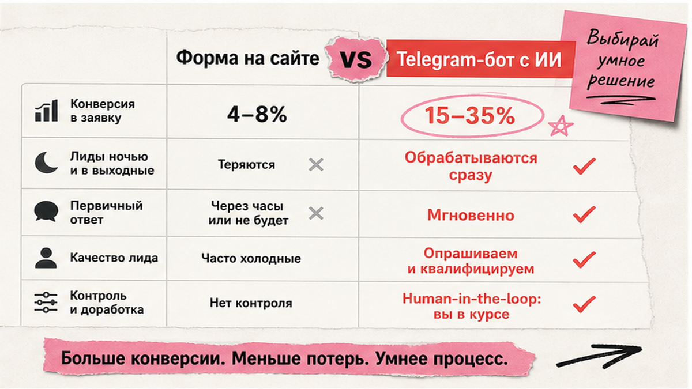
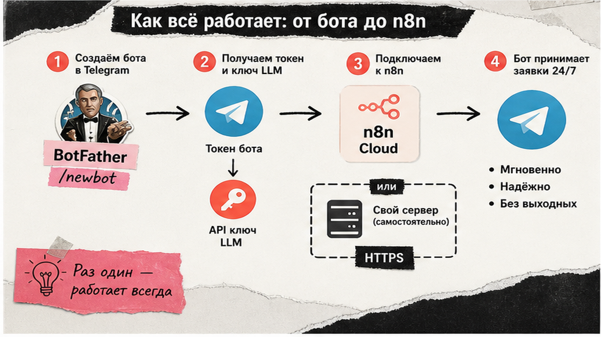
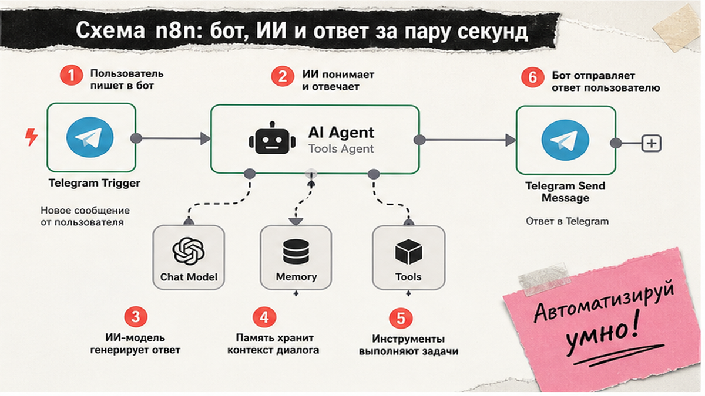

Заявки в Telegram приходят ночью и в выходные, а менеджер отвечает через час – клиент уже у конкурента. Готовые конструкторы дают шаблонный чат, но не связку с CRM и эскалацией. Telegram-бот с ИИ на n8n – это ваш сценарий без кода: входящее сообщение, ответ нейросети, запись лида и кнопка "Позвать менеджера". За 30–40 минут вы соберёте рабочий прототип и пройдёте чеклист перед запуском для клиентов.
TL;DR / Быстрый инсайт: Telegram-бот с ИИ на n8n – связка Telegram Trigger, AI Agent (узел-дирижёр с языковой моделью и инструментами), Window Buffer Memory и Telegram Send Message. BotFather выдаёт токен; webhook работает только по HTTPS – проще стартовать с n8n Cloud trial. Для бизнеса добавьте 1–2 tools (FAQ в Google Sheets, лид в CRM) и human-in-the-loop: сложные кейсы – менеджеру. Перед продакшеном – fallback, Error Workflow и лог telegram_id.
Конкуренты собирают MVP за полчаса, но редко доводят до операционки: заявка, CRM, передача менеджеру. Здесь – полный B2B-контур без кода. Углубление в AI Agent и RAG – в гайде по автоматизации n8n; эта статья – только Telegram. n8n даёт 400+ интеграций; webhook (входящий сигнал на URL n8n) отвечает быстрее polling в типичных кейсах.

Бот закрывает ночные обращения, однотипные FAQ и хаотичные заявки без CRM. В маркетинговых бенчмарках конверсия чат-бота в целевое действие часто 15–35% против 4–8% у форм на сайте – ориентир, не гарантия для вашей ниши. Автономный ИИ без человека справляется с менее чем 2,5% сложных задач – закладывайте human-in-the-loop: бот квалифицирует, менеджер закрывает сделку. Около 40% проектов агентов срываются из-за скрытых затрат.
Делайте: формулируйте одну главную задачу бота (лиды, FAQ или запись на звонок). Не делайте: пытаться закрыть весь отдел продаж одним промптом без эскалации.

Старт с трёх заготовок: токен бота, ключ языковой модели и рабочий n8n с HTTPS.
| Критерий | n8n Cloud | Self-host (CE) |
|---|---|---|
| HTTPS для Telegram | Да, сразу | Нужен SSL и WEBHOOK_URL |
| Стоимость платформы | От 20 €/мес (2 500 executions) | VPS от ~500 ₽/мес (оценка практиков) |
| Кому подходит | Первый бот за вечер, без DevOps | Данные на своём сервере, EU/свой ДЦ |
| Риск | Лимит executions на тарифе | Queue mode ломает Simple Memory в проде |
Telegram Bot API принимает webhook только по HTTPS (порты 443, 80, 88, 8443). Полная связка n8n + LLM + CRM – ориентир около $150/мес по оценкам интеграторов.
Делайте: для первого бота – Cloud trial. Не делайте: запускать self-host без SSL – webhook просто не подключится.

Схема workflow:
Telegram Trigger (Message) → AI Agent → Chat Model + Memory + Tools → Telegram Send Message
Типичная ошибка – неактивный workflow. Делайте: включите Activate и тестируйте в личке с ботом до публикации ссылки. Не делайте: ставить "Message a Model" вместо AI Agent, когда нужны FAQ и лиды – агент сам выбирает tools.
Без памяти бот забывает контекст после каждой реплики. Window Buffer Memory (Simple Memory) хранит последние сообщения диалога.
Добавьте 1–2 Tool sub-nodes с понятным description для модели:
Имя tool – "search_faq" или "create_lead", не "tool1". На tool-нодах включите Continue on Error. Делайте: начните с одного tool. Не делайте: пять интеграций сразу – модель путается, растёт счёт API.
Голос – отдельная ветка через Switch node: если message.voice – Get File → транскрипция Whisper → текст в AI Agent. Текстовые сообщения идут напрямую в агента.
Эскалация – human-in-the-loop. Кнопка "Связаться с менеджером" + Telegram Send and Wait, или уведомление в служебный чат при словах "жалоба"/"возврат"/"опт" с telegram_id клиента. Шаблон workflow 3350 на n8n.io – образец bot-to-human handoff; для MVP возьмите логику, не все 39 нод.
Делайте: логируйте telegram_id каждого лида – без него менеджер не найдёт клиента в мессенджере. Не делайте: оставлять бота без кнопки эскалации на сложных B2B-продуктах.
Чеклист перед ссылкой для клиентов:
Делайте: стресс-тест с коллегой, имитирующим сложного клиента. Не делайте: включать прод без Error Workflow – первая ошибка API оставит чат без ответа.
После MVP масштабируйте осознанно:
Если нужен разбор вашей воронки и связка Telegram с amoCRM или Bitrix24 под ключ – обсудите внедрение AI с командой [REDACTED]. Для диагностики процессов перед автоматизацией подойдёт AI-аудит.
Материал проверен: эксперт Елена Ковалева (Главный эксперт по SEO/GEO).
Достоверность данных: все статистические показатели и ключевые фразы верифицированы по данным Яндекс Вордстат на июнь 2026 года.
Создайте бота в @BotFather (/newbot), скопируйте токен. В n8n: Telegram Trigger, Credential с токеном, Updates = Message, Activate workflow. Напишите боту – срабатывание видно в Execution Log.
Да. Webhook только HTTPS. На Cloud SSL есть из коробки; на self-host задайте WEBHOOK_URL с доменом и сертификатом.
Старт: gpt-4o-mini (цена и скорость). Сложная поддержка: GPT-4o или Claude Sonnet. Локально: Ollama на VPS, если данные не уходят в облако провайдера.
Подключите Window Buffer Memory к AI Agent. Session Key: chat.id из trigger, окно 10–20 реплик. На self-host проверьте, что в проде не queue mode.
OpenAI node только генерирует текст. AI Agent сам вызывает tools (FAQ, CRM). Для лидов нужен Agent с минимум одним Tool sub-node.
Пропишите эскалацию в system prompt, добавьте кнопку в ответе. Технически: Send and Wait или служебный чат с telegram_id. Образец – workflow 3350, упрощённо.
n8n Cloud от 20 €/мес (2 500 executions) или CE + VPS от ~500 ₽. API LLM – отдельно по токенам. Полная система – ориентир ~$150/мес.